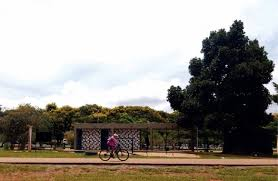

Um dos Maiores Parques Urbanos do Mundo
Cenário da famosa música "Eduardo e Mônica", o parque conta com quadras de esporte, ciclovias, lagos e áreas de churrasco. É o coração do lazer brasiliense.
Voltar ao Início
Cenário da famosa música "Eduardo e Mônica", o parque conta com quadras de esporte, ciclovias, lagos e áreas de churrasco. É o coração do lazer brasiliense.
Voltar ao Início